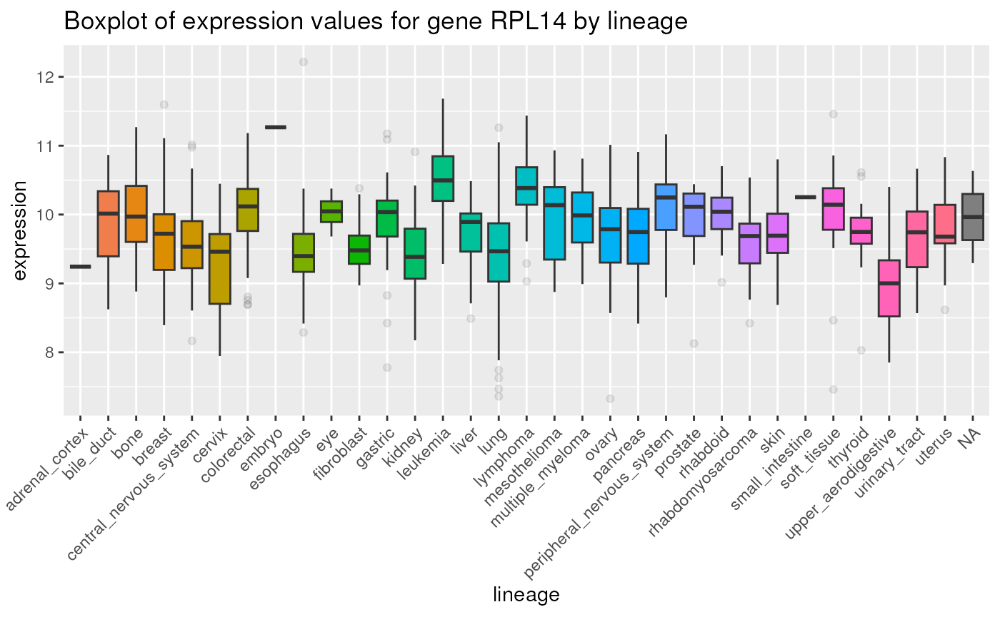

using_depmap.RmdThis vignette illustrates use cases and visualizations of the data found in the depmap package. See the depmap vignette for details about the datasets.
The depmap
package aims to provide a reproducible research framework to cancer
dependency data described by Tsherniak, Aviad, et
al. “Defining a cancer dependency map.” Cell 170.3 (2017): 564-576..
The data found in the depmap
package has been formatted to facilitate the use of common R packages
such as dplyr and ggplot2. We hope that this
package will allow researchers to more easily mine, explore and visually
illustrate dependency data taken from the Depmap cancer genomic
dependency study.
Perhaps the most interesting datasets found within the depmap
package are those that relate to the cancer gene dependency score, such
as rnai and crispr. These datasets contain a
score expressing how vital a particular gene is in terms of how lethal
the knockout/knockdown of that gene is on a target cell line. For
example, a highly negative dependency score implies that a cell line is
highly dependent on that gene.
Load necessary libaries.
library("dplyr")
library("ggplot2")
library("viridis")
library("tibble")
library("gridExtra")
library("stringr")
library("depmap")
library("ExperimentHub")Load the rnai, crispr and
copyNumber datasets for visualization. Note: the datasets
listed below are from the 19Q3 release. Newer datasets, such as those
from the 20Q1 release are available.
## create ExperimentHub query object
eh <- ExperimentHub()
query(eh, "depmap")## ExperimentHub with 82 records
## # snapshotDate(): 2024-02-22
## # $dataprovider: Broad Institute
## # $species: Homo sapiens
## # $rdataclass: tibble
## # additional mcols(): taxonomyid, genome, description,
## # coordinate_1_based, maintainer, rdatadateadded, preparerclass, tags,
## # rdatapath, sourceurl, sourcetype
## # retrieve records with, e.g., 'object[["EH2260"]]'
##
## title
## EH2260 | rnai_19Q1
## EH2261 | crispr_19Q1
## EH2262 | copyNumber_19Q1
## EH2263 | RPPA_19Q1
## EH2264 | TPM_19Q1
## ... ...
## EH7555 | copyNumber_22Q2
## EH7556 | TPM_22Q2
## EH7557 | mutationCalls_22Q2
## EH7558 | metadata_22Q2
## EH7559 | achilles_22Q2
rnai <- eh[["EH3080"]]
mutationCalls <- eh[["EH3085"]]
metadata <- eh[["EH3086"]]
TPM <- eh[["EH3084"]]
copyNumber <- eh[["EH3082"]]
# crispr <- eh[["EH3081"]]
# drug_sensitivity <- eh[["EH3087"]]By importing the depmap data into the R environment, the
data can be mined more effectively. For example, if one interested
researching soft tissue sarcomas and wanted to search all such cancer
cell lines for the gene with the greatest dependency, it is possible to
accomplish this task by using data manipulation and visualization tools
dplyr and ggplot2. Below, the
rnai dataset is selected for cell lines with
“SOFT_TISSUE” in the CCLE name, and displaying a list of the
highest dependency scores.
## list of dependency scores
rnai |>
dplyr::select(cell_line, gene_name, dependency) |>
dplyr::filter(stringr::str_detect(cell_line, "SOFT_TISSUE")) |>
dplyr::arrange(dependency) |>
head(10)## # A tibble: 10 × 3
## cell_line gene_name dependency
## <chr> <chr> <dbl>
## 1 FUJI_SOFT_TISSUE RPL14 -3.60
## 2 SJRH30_SOFT_TISSUE RAN -3.41
## 3 SJRH30_SOFT_TISSUE RPL14 -3.36
## 4 SJRH30_SOFT_TISSUE RBX1 -3.31
## 5 HS729_SOFT_TISSUE PSMA3 -3.22
## 6 SJRH30_SOFT_TISSUE RUVBL2 -3.13
## 7 KYM1_SOFT_TISSUE RPL14 -3.03
## 8 RH41_SOFT_TISSUE RBX1 -3.01
## 9 HS729_SOFT_TISSUE NUTF2 -2.90
## 10 SJRH30_SOFT_TISSUE NUTF2 -2.85As the gene RPL14 appears several times in the top
dependencies scores, it may make an interesting candidate target. Below,
a plot of the rnai data is displayed as a histogram showing
the distribution of dependency scores for gene RPL14.
## Basic histogram
rnai |>
dplyr::select(gene, gene_name, dependency) |>
dplyr::filter(gene_name == "RPL14") |>
ggplot(aes(x = dependency)) +
geom_histogram() +
geom_vline(xintercept = mean(rnai$dependency, na.rm = TRUE),
linetype = "dotted", color = "red") +
ggtitle("Histogram of dependency scores for gene RPL14")A more complex plot of the rnai data, as shown below
involves plotting the distribution of dependency scores for gene
RPL14 for each major type of cancer, while highlighting the
nature of mutations of this gene in such cancer cell lines (e.g. if such
are COSMIC hotspots, damaging, etc.). Notice that the plot above
reflects the same overall distribution in two dimensions.
meta_rnai <- metadata |>
dplyr::select(depmap_id, lineage) |>
dplyr::full_join(rnai, by = "depmap_id") |>
dplyr::filter(gene_name == "RPL14") |>
dplyr::full_join((mutationCalls |>
dplyr::select(depmap_id, entrez_id,
is_cosmic_hotspot, var_annotation)),
by = c("depmap_id", "entrez_id"))
p1 <- meta_rnai |>
ggplot(aes(x = dependency, y = lineage)) +
geom_point(alpha = 0.4, size = 0.5) +
geom_point(data = subset(
meta_rnai, var_annotation == "damaging"), color = "red") +
geom_point(data = subset(
meta_rnai, var_annotation == "other non-conserving"), color = "blue") +
geom_point(data = subset(
meta_rnai, var_annotation == "other conserving"), color = "cyan") +
geom_point(data = subset(
meta_rnai, is_cosmic_hotspot == TRUE), color = "orange") +
geom_vline(xintercept=mean(meta_rnai$dependency, na.rm = TRUE),
linetype = "dotted", color = "red") +
ggtitle("Scatterplot of dependency scores for gene RPL14 by lineage")
p1Below is a boxplot displaying expression values for gene
RPL14 by lineage:
metadata |>
dplyr::select(depmap_id, lineage) |>
dplyr::full_join(TPM, by = "depmap_id") |>
dplyr::filter(gene_name == "RPL14") |>
ggplot(aes(x = lineage, y = expression, fill = lineage)) +
geom_boxplot(outlier.alpha = 0.1) +
ggtitle("Boxplot of expression values for gene RPL14 by lineage") +
theme(axis.text.x = element_text(angle = 45, hjust=1)) +
theme(legend.position = "none")
High dependency, high expression genes are more likely to interesting research targets. Below is a plot of expression vs rnai gene dependency for Rhabdomyosarcoma Sarcoma:
## expression vs rnai gene dependency for Rhabdomyosarcoma Sarcoma
sarcoma <- metadata |>
dplyr::select(depmap_id, cell_line,
primary_disease, subtype_disease) |>
dplyr::filter(primary_disease == "Sarcoma",
subtype_disease == "Rhabdomyosarcoma")
rnai_sub <- rnai |>
dplyr::select(depmap_id, gene, gene_name, dependency)
tpm_sub <- TPM |>
dplyr::select(depmap_id, gene, gene_name, expression)
sarcoma_dep <- sarcoma |>
dplyr::left_join(rnai_sub, by = "depmap_id") |>
dplyr::select(-cell_line, -primary_disease,
-subtype_disease, -gene_name)
sarcoma_exp <- sarcoma |>
dplyr::left_join(tpm_sub, by = "depmap_id")
sarcoma_dat_exp <- dplyr::full_join(sarcoma_dep, sarcoma_exp,
by = c("depmap_id", "gene")) |>
dplyr::filter(!is.na(expression))
p2 <- ggplot(data = sarcoma_dat_exp, aes(x = dependency, y = expression)) +
geom_point(alpha = 0.4, size = 0.5) +
geom_vline(xintercept=mean(sarcoma_dat_exp$dependency, na.rm = TRUE),
linetype = "dotted", color = "red") +
geom_hline(yintercept=mean(sarcoma_dat_exp$expression, na.rm = TRUE),
linetype = "dotted", color = "red") +
ggtitle("Scatterplot of rnai dependency vs expression values for gene")
p2 + theme(axis.text.x = element_text(angle = 45))A selection of the genes shown above with the lowest depenency scores, also displaying gene expression in TPM in the last column.
sarcoma_dat_exp |>
dplyr::select(cell_line, gene_name, dependency, expression) |>
dplyr::arrange(dependency) |>
head(10)## # A tibble: 10 × 4
## cell_line gene_name dependency expression
## <chr> <chr> <dbl> <dbl>
## 1 A204_SOFT_TISSUE RPS27A -2.62 10.6
## 2 A204_SOFT_TISSUE RPL14 -2.34 10.0
## 3 A204_SOFT_TISSUE RPL7 -2.23 11.5
## 4 A204_SOFT_TISSUE RPS16 -2.08 11.2
## 5 A204_SOFT_TISSUE RPS15A -1.92 11.6
## 6 A204_SOFT_TISSUE RBX1 -1.91 6.51
## 7 A204_SOFT_TISSUE SF3B2 -1.80 7.47
## 8 A204_SOFT_TISSUE RPL5 -1.79 10.7
## 9 A204_SOFT_TISSUE RPS3A -1.77 11.4
## 10 A204_SOFT_TISSUE RPL13 -1.68 11.6Below is a boxplot displaying log genomic copy number for gene
RPL14 by lineage:
metadata |>
dplyr::select(depmap_id, lineage) |>
dplyr::full_join(copyNumber, by = "depmap_id") |>
dplyr::filter(gene_name == "RPL14") |>
ggplot(aes(x = lineage, y = log_copy_number, fill = lineage)) +
geom_boxplot(outlier.alpha = 0.1) +
ggtitle("Boxplot of log copy number for gene RPL14 by lineage") +
theme(axis.text.x = element_text(angle = 45, hjust = 1)) +
theme(legend.position = "none")## R Under development (unstable) (2024-02-21 r85967)
## Platform: x86_64-pc-linux-gnu
## Running under: Ubuntu 22.04.3 LTS
##
## Matrix products: default
## BLAS: /usr/lib/x86_64-linux-gnu/openblas-pthread/libblas.so.3
## LAPACK: /usr/lib/x86_64-linux-gnu/openblas-pthread/libopenblasp-r0.3.20.so; LAPACK version 3.10.0
##
## locale:
## [1] LC_CTYPE=en_US.UTF-8 LC_NUMERIC=C
## [3] LC_TIME=en_US.UTF-8 LC_COLLATE=en_US.UTF-8
## [5] LC_MONETARY=en_US.UTF-8 LC_MESSAGES=en_US.UTF-8
## [7] LC_PAPER=en_US.UTF-8 LC_NAME=C
## [9] LC_ADDRESS=C LC_TELEPHONE=C
## [11] LC_MEASUREMENT=en_US.UTF-8 LC_IDENTIFICATION=C
##
## time zone: UTC
## tzcode source: system (glibc)
##
## attached base packages:
## [1] stats graphics grDevices utils datasets methods base
##
## other attached packages:
## [1] ExperimentHub_2.11.1 AnnotationHub_3.11.1 BiocFileCache_2.11.1
## [4] dbplyr_2.4.0 BiocGenerics_0.49.1 depmap_1.17.2
## [7] stringr_1.5.1 gridExtra_2.3 tibble_3.2.1
## [10] viridis_0.6.5 viridisLite_0.4.2 ggplot2_3.5.0
## [13] dplyr_1.1.4 BiocStyle_2.31.0
##
## loaded via a namespace (and not attached):
## [1] KEGGREST_1.43.0 gtable_0.3.4 httr2_1.0.0
## [4] xfun_0.42 bslib_0.6.1 Biobase_2.63.0
## [7] bitops_1.0-7 vctrs_0.6.5 tools_4.4.0
## [10] generics_0.1.3 stats4_4.4.0 curl_5.2.0
## [13] fansi_1.0.6 AnnotationDbi_1.65.2 RSQLite_2.3.5
## [16] highr_0.10 blob_1.2.4 pkgconfig_2.0.3
## [19] desc_1.4.3 S4Vectors_0.41.3 GenomeInfoDbData_1.2.11
## [22] lifecycle_1.0.4 farver_2.1.1 compiler_4.4.0
## [25] Biostrings_2.71.2 textshaping_0.3.7 munsell_0.5.0
## [28] GenomeInfoDb_1.39.6 htmltools_0.5.7 sass_0.4.8
## [31] RCurl_1.98-1.14 yaml_2.3.8 crayon_1.5.2
## [34] pillar_1.9.0 pkgdown_2.0.7.9000 jquerylib_0.1.4
## [37] cachem_1.0.8 mime_0.12 tidyselect_1.2.0
## [40] digest_0.6.34 stringi_1.8.3 purrr_1.0.2
## [43] bookdown_0.37 BiocVersion_3.19.1 labeling_0.4.3
## [46] fastmap_1.1.1 grid_4.4.0 colorspace_2.1-0
## [49] cli_3.6.2 magrittr_2.0.3 utf8_1.2.4
## [52] withr_3.0.0 filelock_1.0.3 scales_1.3.0
## [55] rappdirs_0.3.3 bit64_4.0.5 XVector_0.43.1
## [58] rmarkdown_2.25 httr_1.4.7 bit_4.0.5
## [61] png_0.1-8 ragg_1.2.7 memoise_2.0.1
## [64] evaluate_0.23 knitr_1.45 IRanges_2.37.1
## [67] rlang_1.1.3 glue_1.7.0 DBI_1.2.2
## [70] BiocManager_1.30.22 jsonlite_1.8.8 R6_2.5.1
## [73] zlibbioc_1.49.0 systemfonts_1.0.5 fs_1.6.3